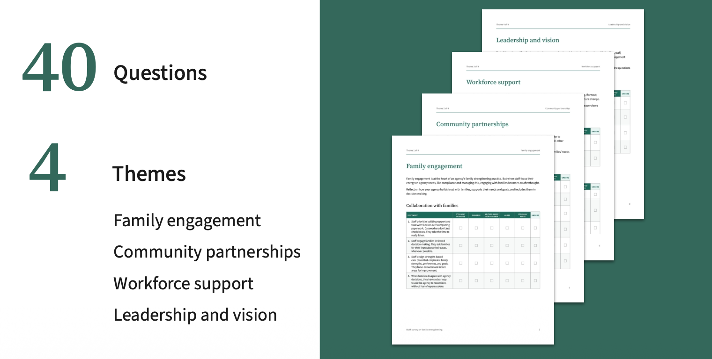

Building a culture of family strengthening
A maturity model to help child welfare agencies shift from reactive intervention, to proactive family-centred support.
The challenge
Families often become involved with the child welfare system because of child protection reports that are made for neglect. This is commonly a result of living in poverty and experiencing challenges meeting basic needs such as housing, food, and healthcare.
Child welfare agencies are beginning to reorient their approach away from punitive intervention, to providing proactive support that helps ensure child safety while keeping families together and getting their needs met.
The project
This project ran for 6 months, and build on 1 year of work that was aimed at understanding and how child welfare agencies can prevent system involvement. I worked across all these projects as a User Experiencer Researcher (UXR), taking a lead role in developing the research strategy and plans, conducting literature reviews, recruiting and interviewing research participants, synthesizing data, and reporting out to stakeholders, funders, and collaborative group composed of child welfare leaders from across the U.S..
This final project involved working with San Diego County's Office of Child and Family Strengthening and five additional states. We conducted in-person research in San Diego County, which included home visit observation, running focus groups with staff and community members, and conducting interviews with parents. We surfaced four barriers that agencies face in supporting families:
- Agency processes make it hard for workers to meaningfully engage families.
- Limited awareness and availability of community resources./li>
- Low workforce capacity and psychological safety.
- Lack of vision from agency leadership.

Impact
Our work resulted in building a maturity model that assesses agencies across the four themes reflected in our findings: leadership and vision, workforce support, community partnerships, and family engagement.
It includes a staff survey available in multiple formats, with a scoring template that maps results to maturity levels across the four pillars. This survey points agencies to plus tailored recommendations and a facilitation guide for how to implement the maturity model in their agency.
Reflections
The team started out using “prevention”, language used by child welfare agencies. We later changed this to “family strengthening”, as families do not think of seeking supports in terms of child welfare prevention.